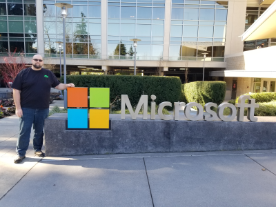
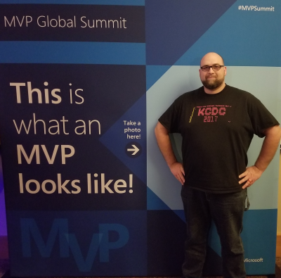
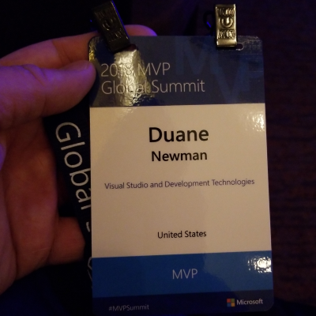

 A couple weeks ago I went to my first MVP Summit. The MVP program is a way that Microsoft recognizes “technology experts who passionately share their knowledge with the community”*. There are several perks to being an MVP. While many may immediately think of the compliemntary MSDN subscription and software licenses from other vendors, I was most excited about the opportunity to go to MVP Summit. As an MVP (under tight NDA) I am able to meet over skype with the various product teams at MS to get a view into where they are headed with thier technologies. This is invaluable as a consultant tring to stear my customers in the best direction and as a speaker shaping my future presentations.
 These skype meetings are great, but once a year Micorosoft puts on the MVP Summit and brings in thousands of MVPs to Redmond for in-person sessions with the developers creating the tools I use every day. As a speaker I approach most conferences differently than I used to. I often don’t get to sessions as I’m either prepping for my own or I’ve ran into a friend in the hallway and we get busy catching up or having our own technology conversations. It is great, but I do sometimes miss the opportunity to just hop from session to session gleaning the information from the speaker without the stress of presenting. Well, MVP Summit allowed me to do just that: be an attendee again, and it was really cool.
 One of the things that stuck out the most to me at MVP Summit was the willingness that the teams had to get feedback. As a developer I can totally understand it, and I always hope for good feedback from users so that I can improve, but it just surprised me to see that same interest from Microsoft. It was a treat to get to meet most of the Xamarin PMs while I there, and one of the best sessions I went to was a panel discussion with all of them, including Miguel. I was impressed with how they reacted and replied when questions were asked about what the teams were doing (especially with critical feedback). It was cool getting straight answers on why a feature is (or isn’t) being implemented with explanations of what they’ve tried, rather than just being told it isn’t happening. At one point when a new feature was being talked about and one of the MVPs raised a question that the team had not considered the PM polled the room for our opinion on what would be most useful and when he saw that it was for the oposite aproach they were taking there was real interest in making changes.
I also had a great oportunity to see friends I usually just see when we are speaking at the same conference as well as meet many new friends. It was cool getting to have face-to-face encounters with some of the “big” names in the developer community. The networking was fantastic, and I look forward to seeing many of the other MVPs and MS employees again in the future.
Here are a few pictures with some of the awesome people I got to hang out with.
Here’s hoping to being renewed and attending next year!
comments powered by Disqus